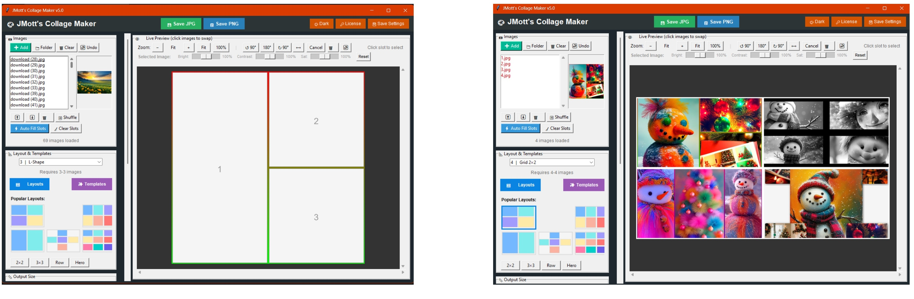

A lightweight, offline desktop application for creating clean, printable photo collages — without subscriptions, cloud uploads, or AI.
I built this because most modern collage tools are either subscription-based, cloud-dependent, or overloaded with features I didn’t need. This tool focuses on predictable layouts, local processing, and simple control.
Download, pricing, and license details:
Below are real screenshots and exports from the application. These are created using predefined layouts and local image processing.
